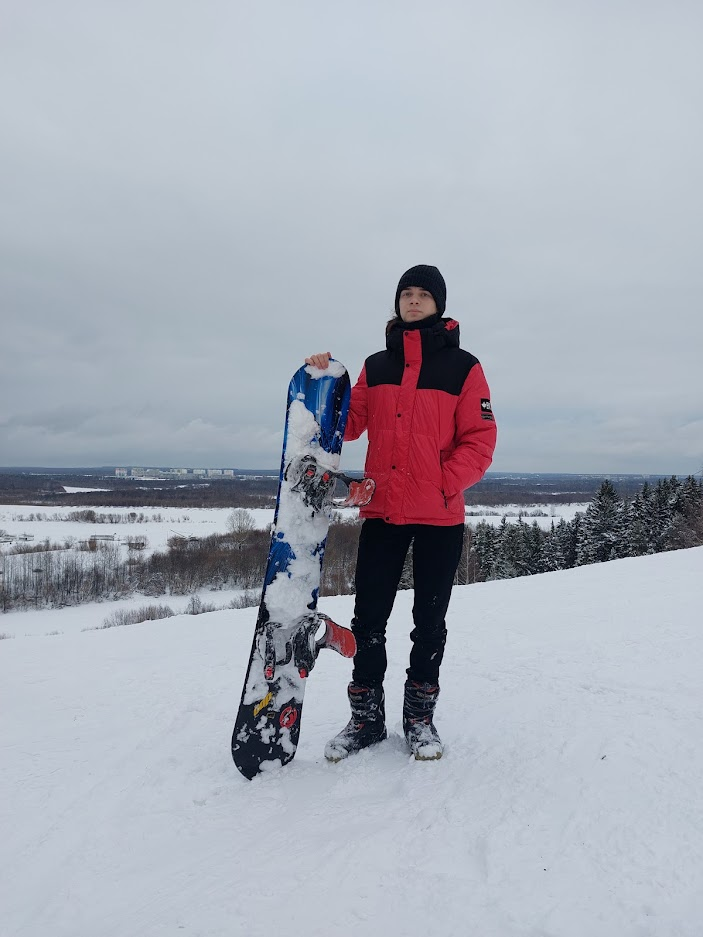

У меня было много увлечений. Но часто я переставал ими заниматься, потому что не нравилось.
В детстве мои родители отдали меня в секцию борьбы. Так я проходил на борьбу 6 лет. Помимо борьбы я также занимался таким спортом, как: настольный теннис, футбол, велоспорт
Так же в 9 классе я решил попробовать себя в музыке, так я научился играть на саксофоне. На данный момент я бросил это занятие.
Мне со школы нравилось программировать и писать программы. На данный момент я знаю такие языки программирования, как: Python, C, C++, HTML и CSS.
Сейчас моими хобби можно считать такие занятия:
- Сноубординг
- Скейтбординг
- Велоспорт
- Чтение
- Видеоигры
- Программирование